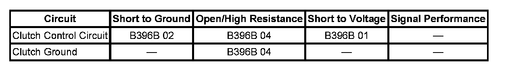

B396B
DTC B396B
DTC DESCRIPTOR
DTC B396B 01
Liftgate Motor Clutch Control Circuit Short to Battery
DTC B396B 02
Liftgate Motor Clutch Control Circuit Short to Ground
DTC B396B 04
Liftgate Motor Clutch Control Circuit Open
DIAGNOSTIC FAULT INFORMATION

Perform the Diagnostic System Check - Vehicle prior to using this diagnostic procedure. Initial Inspection and Diagnostic Overview
CIRCUIT/SYSTEM DESCRIPTION
The liftgate motor clutch engages or disengages the liftgate motor to the liftgate drive gear and is the component that determines power or manual operation. When the liftgate control module supplies power to the clutch control circuit, the clutch coil is energized and the liftgate motor is engaged to the liftgate drive gear so that power operation can occur. The liftgate control module monitors the clutch control circuit at all times for a short high while in an inactive state or a short low or insufficient current flow while in an active state.
CONDITIONS FOR RUNNING THE DTC
System voltage to the liftgate control module must be 9-16 volts.
CONDITIONS FOR SETTING THE DTC
- The liftgate control module detects a high condition on the clutch control circuit while in an inactive state.
- The liftgate control module detects a low condition on the clutch control circuit while in an active state.
- The liftgate control module detects insufficient current flow on the clutch control circuit while in an active state.
ACTION TAKEN WHEN THE DTC SETS
- When an open or short low condition exists, power liftgate operation will be inoperative.
- When a short high condition exists, the liftgate can not be opened or closed manually.
CONDITIONS FOR CLEARING THE DTC
- The DTC will be current for as long as the fault is present.
- When the fault is no longer present, the DTC will be a history status code.
CIRCUIT/SYSTEM TESTING
1. Disconnect the liftgate control module connector C3.
2. Using a DMM, verify that approximately 10 ohms of resistance is present between the liftgate clutch control circuit terminals in the harness connector.
- If excessive resistance is present between the clutch control circuits, replace the liftgate motor assembly.
3. Using a DMM, verify that no continuity is present between either of the clutch control circuit terminals in the harness connector and ground.
- If continuity is present from a clutch control circuit and ground, replace the liftgate motor assembly.
4. If the liftgate motor control circuits test normal, replace the liftgate control module.
REPAIR INSTRUCTIONS
Perform the Diagnostic Repair Verification after completing the diagnostic procedure.
- Power Liftgate Motor Replacement
- Control Module References for liftgate control module replacement, programming and setup. Verification Tests Programming and Relearning